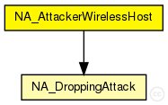
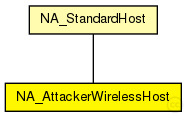

This documentation is released under the Creative Commons license
This documentation is released under the Creative Commons licenseAttacker wireless host. Modificated from WirelessHost module. Redefined from INET framework and used as attacker host.
To implement an attack you must include the corresponding attack controller module in the attacker host.
This attack could be include N attacks controllers to implement several simultaneous attacks. The current attack controllers included are:
See also: NA_StandardHost, WirelessHost, NA_DroppingAttack
Author: Gabriel Maciá Fernández, gmacia@ugr.es
Date: 01/22/2013

The following diagram shows usage relationships between types. Unresolved types are missing from the diagram.
The following diagram shows inheritance relationships for this type. Unresolved types are missing from the diagram.
| Name | Type | Description |
|---|---|---|
| NA_StandardHost | compound module |
Generic standard host. Modificated from StandarHost module. Migrated from INET for inheritance requirements of NA_AttackerAdhocHost and NA_AttackerWirelessHost |
| Name | Type | Default value | Description |
|---|---|---|---|
| numExtInterfaces | int | 0 | |
| numRadios | int | 1 |
the number of radios in the router. by default no wireless |
| numPcapRecorders | int | 0 |
no of PcapRecorders. |
| mobilityType | string | "StationaryMobility" | |
| routingFile | string | "" | |
| IPForward | bool | false | |
| numTcpApps | int | 0 |
no of TCP apps. Specify the app types in INI file with tcpApp[0..1].typename="TCPEchoApp" syntax |
| numUdpApps | int | 0 |
no of UDP apps. Specify the app types in INI file with udpApp[0..1].typename="UDPVideoStreamCli" syntax |
| numSctpApps | int | 0 |
no of SCTP apps. Specify the app types in INI file with sctpApp[0..1].typename="SCTPServer" syntax |
| numPingApps | int | 0 |
no of PING apps. Specify the app types in INI file with pingApp[0..1].typename="PingApp" syntax |
| tcpType | string | firstAvailable("TCP", "TCP_lwIP", "TCP_NSC", "TCP_None") |
tcp implementation (e.g. ~TCP, ~TCP_lwIP, ~TCP_NSC) or ~TCPSpoof |
| udpType | string | firstAvailable("UDP","UDP_None") | |
| sctpType | string | firstAvailable("SCTP","SCTP_None") |
| Name | Value | Description |
|---|---|---|
| display | i=device/wifilaptop;bgb=754,448;i2=status/cross,white | |
| node | ||
| labels | node |
| Name | Direction | Size | Description |
|---|---|---|---|
| radioIn [ ] | input | numRadios | |
| pppg [ ] | inout | ||
| ethg [ ] | inout |
| Name | Type | Default value | Description |
|---|---|---|---|
| networkLayer.ip.procDelay | double | 0s | |
| networkLayer.ip.timeToLive | int | 32 | |
| networkLayer.ip.multicastTimeToLive | int | 32 | |
| networkLayer.ip.fragmentTimeout | double | 60s | |
| networkLayer.ip.forceBroadcast | bool | false | |
| networkLayer.arp.retryTimeout | double | 1s |
number seconds ARP waits between retries to resolve an IPv4 address |
| networkLayer.arp.retryCount | int | 3 |
number of times ARP will attempt to resolve an IPv4 address |
| networkLayer.arp.cacheTimeout | double | 120s |
number seconds unused entries in the cache will time out |
| networkLayer.arp.globalARP | bool | false | |
| routingTable.routerId | string | "auto" |
for routers, the router id using IPv4 address dotted notation; specify "auto" to select the highest interface address; should be left empty ("") for hosts |
| routingTable.forwardMulticast | bool | false |
turns multicast forwarding on/off |
| interfaceTable.displayAddresses | bool | true |
whether to display IP addresses on links |
| pcapRecorder.verbose | bool | false |
whether to log packets on the module output |
| pcapRecorder.pcapFile | string | "" |
the PCAP file to be written |
| pcapRecorder.snaplen | int | 65535 |
maximum number of bytes to record per packet |
| pcapRecorder.dumpBadFrames | bool | true |
enable dump of frames with hasBitError |
| pcapRecorder.moduleNamePatterns | string | "wlan[*] eth[*] ppp[*] ext[*]" |
space-separated list of sibling module names to listen on |
| pcapRecorder.sendingSignalNames | string | "packetSentToLower" |
space-separated list of outbound packet signals to subscribe to |
| pcapRecorder.receivingSignalNames | string | "packetReceivedFromLower" |
space-separated list of inbound packet signals to subscribe to |
| droppingAttack.active | bool | false |
Indicates if this attack is active or not in the node |
| droppingAttack.startTime | double | 0s |
Timestamp to start the attack |
| droppingAttack.endTime | double | 0s |
Time instant at which the attack ends, 0 means that the attack will not end during the simulation. |
| droppingAttack.droppingAttackProbability | double | 0 |
Probability of dropping a packet. Range [0,1]. |
// // Attacker wireless host. Modificated from WirelessHost module. // Redefined from INET framework and used as attacker host. // // To implement an attack you must include the corresponding attack controller module in the attacker host. // // This attack could be include N attacks controllers to implement several simultaneous attacks. // The current attack controllers included are: // - NA_DroppingAttack (dropping attack controller) // // @see NA_StandardHost, WirelessHost, NA_DroppingAttack // // @author Gabriel Maciá Fernández, gmacia@ugr.es // @date 01/22/2013 module NA_AttackerWirelessHost extends NA_StandardHost { @display("i=device/wifilaptop;bgb=754,448;i2=status/cross,white"); numRadios = default(1); submodules: //# Include dropping attack controller droppingAttack: NA_DroppingAttack { @display("p=665,54"); } }
This documentation is released under the Creative Commons license